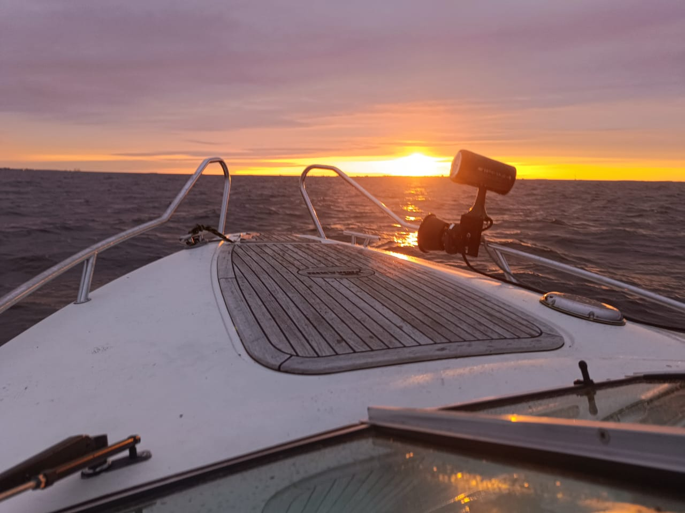
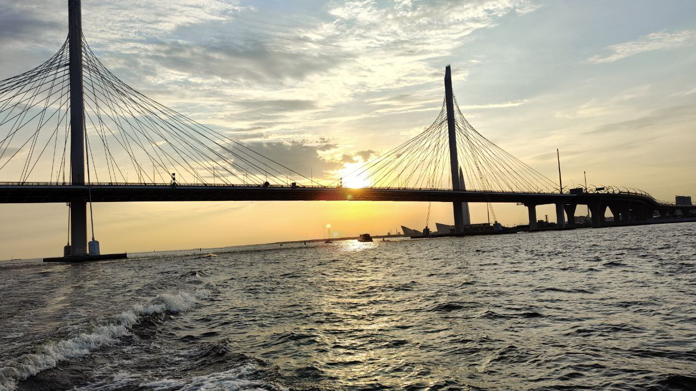
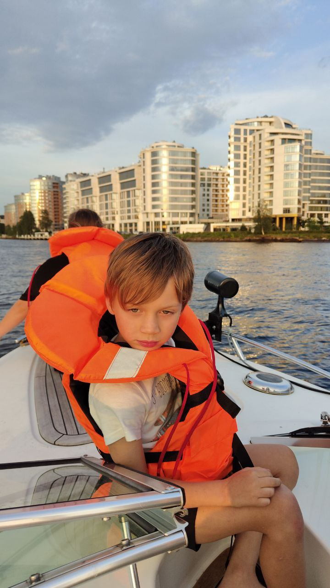
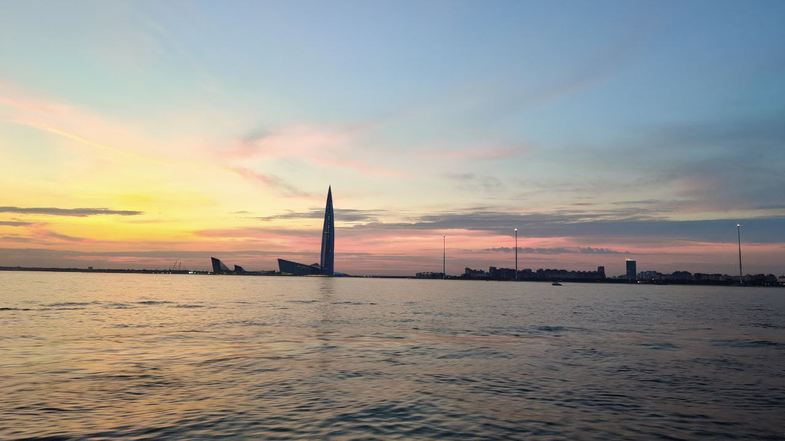
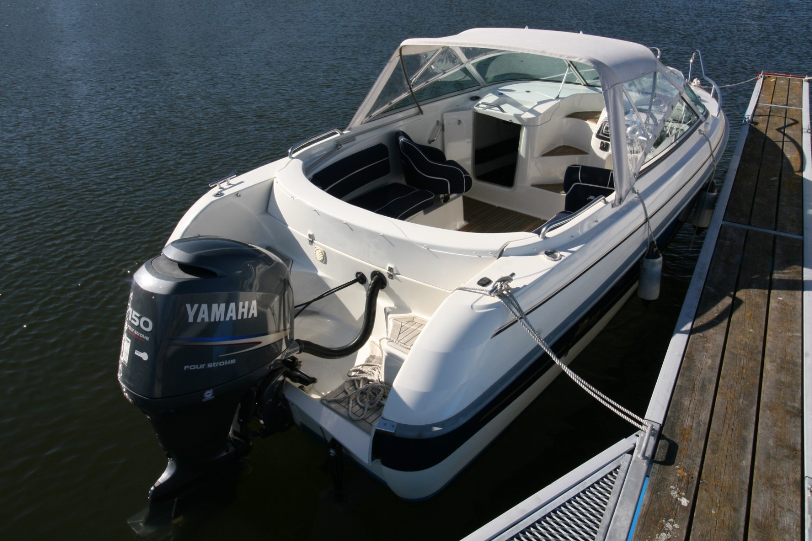

Романтическая прогулка
Спокойный маршрут, мягкий свет, вода и время только для вас двоих.
Авторские прогулки на катере
Приватная прогулка по воде с мягким светом заката, морским воздухом и маршрутом, который собирается под вашу компанию.

Камерное приключение на воде для пары, семьи или друзей.
О проекте
Navia Boat — это прогулки на катере без лишней официальности: когда хочется выдохнуть, увидеть город, побережье или старые форты с воды и провести время с теми, кто вам правда близок.
Формат подойдет для пары, семьи, друзей, гостей города или небольшой компании. Можно устроить спокойную прогулку, мини-праздник, фотосессию или маршрут с характером: дальше, смелее, интереснее.
Авторские программы
Идея
Можно пойти на закат, уйти к фортам, придумать камерный маршрут для своих или собрать большую водную историю с остановками, видами и ощущением настоящей вылазки.
Маршрут
Смотрим на город и побережье с другой стороны, идем к фортам и выбираем темп: спокойно, живо или с легким духом авантюры.
Дальше
Если хочется настоящей поездки, можно обсудить более длинный маршрут, включая крепость Орешек и другие точки по погоде, времени и настроению.
Вопрос
Мы поможем выбрать маршрут под компанию: от красивой прогулки на пару часов до маленького личного приключения на воде.
Форматы прогулок
Спокойный маршрут, мягкий свет, вода и время только для вас двоих.

Легкий формат для общения, музыки, красивых видов и маршрута, который не хочется заканчивать.

Теплая поездка для близких: без суеты, с комфортом и живыми эмоциями.

Маршрут под кадры: отражения, ветер, береговая линия, форты и закатный свет.
Почему это красиво

Вода добавляет ощущение свободы и спокойствия.
Закатный свет красиво ложится на лица, город и побережье.
Приватность маленькой компании помогает расслабиться.
Настроение прогулки легко сделать романтичным, семейным или праздничным.
Как забронировать
Расскажите дату, количество гостей и желаемый формат: спокойная прогулка, закат, форты или маршрут с авантюрой. Мы ответим, какие варианты доступны.